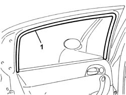
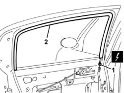

7010D33 channel of door descending glass inner guide (one) lh or rh, of rear side door - r r
- Path
- Procedures > 70 FITTINGS > 7010 PASSENGER COMPARTMENT REAR SIDE DOORS > 7010D rear side door window glasses > 7010D33 channel of door descending glass inner guide (one) lh or rh, of rear side door - r r
- Kind
- repair procedure (removal / refitting; the operation number is the code)
- Applies to
- all engines; all production periods
- Interactive page
- https://sloeber94.github.io/elrnDB-a147/en/#/3025717
Applies to: all engines; all production periods
 Removing
Removing
 Refitting
RefittingLower the window completely.
If the vehicle is not equipped with a safety device for the windows, proceed as follows.
1. Remove the channel from the housing.

Applies to: all engines; all production periods
If the vehicle is equipped with a safety device for the windows, proceed as follows.
7010M10 rear side door electrically operated window switch r r
7010C44 interior handle panel - r r
7010E11 lh or rh rear door inner panel - r+r with fouling parts removed
1. Disconnect the electrical connections.
 | Name | Connector |
|---|---|---|
1 | Anti-crush sensor in left rear door |
| Name | Connector |
|---|---|---|
1 | Anti-crush safety sensor on right rear door |
2. Remove the channel and sensor from the housing.

Applies to: all engines; all production periods
Refitting
RemovingCheck the condition of the channel.
With the window completely lowered, fit the channel in the housing.
If the vehicle is equipped with a safety device, proceed as follows.
Connect the electrical connection
7010E11 lh or rh rear door inner panel - r+r with fouling parts removed
7010C44 interior handle panel - r r
7010M10 rear side door electrically operated window switch r r
Test the operation of the sensor by preventing the window from closing completely using and rigid object and checking that the window stops and then opens again.
Topics linked from this page (5)
- 7010C44 interior handle panel - r r
- 7010E11 lh or rh rear door inner panel - r+r with fouling parts removed
- 7010M10 rear side door electrically operated window switch r r
- K19 Anti-crush sensor in left rear door
- K24 Anti-crush safety sensor on right rear door
Topics that link to this page (6)
- 7010D12 fixed window glass element - r r
- 7010D14 rear side door descending window glass - r r with door panel (and mount frame) removed
- 7010D15 rear side door descending window glass-r r
- 7010D18 rear side door descending window glass channel r r
- 7010E50 rear side door pillar trim (one) lh or rh - r r
- 7205E38 Stripping REAR SIDE DOOR